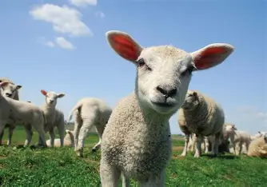
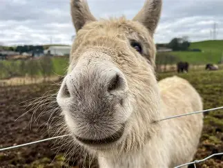
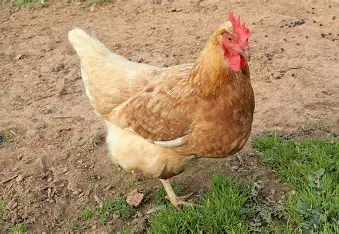
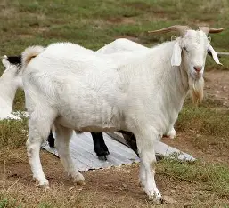
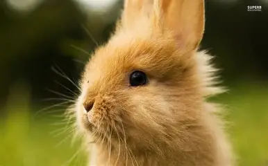
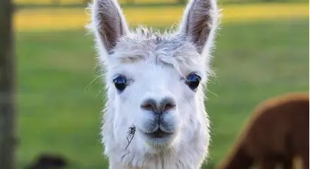
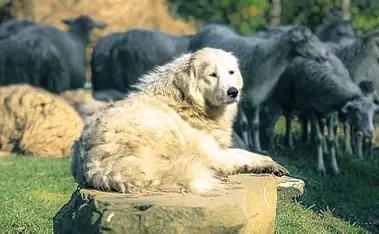

Lucy the lamb:
Lucy is one of the sweetest little residents at Clover Farm. With her soft woolly coat and gentle nature, she quickly becomes a favorite among visitors of all ages. Lucy loves sunny mornings, nibbling on fresh grass, and trotting after her best friends in the pasture.
She’s curious, calm, and always ready for a cuddle—especially if you scratch behind her ears! Whether she’s exploring the fields or resting in the shade, Lucy brings a soft and peaceful charm to the farm.
Come say hello to Lucy the Lamb—she can't wait to meet you!

Denis the donkey:
Denis is the gentle giant of Clover Farm, kind-hearted, calm, and always ready to make new friends. With his big soft ears and slow, steady trot, Denis brings a sense of peace wherever he goes. He loves long scratches along his neck, munching on crunchy carrots, and greeting visitors with his signature, low-pitched bray.
Despite his size, Denis is incredibly gentle and patient, especially with younger visitors who adore brushing his fluffy coat. He enjoys lazy afternoons in the sun, strolling around the paddock, and keeping a watchful eye over his animal friends.
Come visit Denis the Donkey, he's always happy to say hello and brighten your day!

Percy the pig:
Percy is the playful troublemaker of Clover Farm, always curious, always hungry, and always ready for fun! With his adorable snout and happy little grunts, Percy brings a burst of energy wherever he goes. He loves rolling in soft mud, racing his friends to the food trough, and flopping down for a good belly rub afterward.
Percy may be mischievous, but he's also incredibly affectionate. He enjoys meeting new visitors, especially those who bring a tasty treat or two. Whether he's exploring the yard or relaxing in his favorite mud puddle, Percy is guaranteed to make everyone smile.
Come meet Percy the Pig, he's full of personality and always up for a friendly oink!

Helen the hen:
Helen is the bright and busy little hen of Clover Farm, always on the move and always curious about everything around her. With her glossy feathers and cheerful clucks, she brings a lively charm to the coop. Helen loves scratching in the soil for tasty treats, sunbathing in warm patches of light, and leading her feathered friends on mini adventures around the yard.
She's friendly, brave, and surprisingly talkative, especially when visitors stop by to say hello. Helen enjoys gentle strokes, exploring new corners of the farm, and proudly showing off the fresh eggs she lays.
Come meet Helen the Hen,she's small, sweet, and full of farmyard personality!

Garry the goat:
Garry is the lively, lovable rascal of Clover Farm, always curious, always climbing, and always looking for his next snack! With his bright eyes and playful hops, Garry brings endless entertainment to visitors and animals alike. He loves nibbling on leaves, balancing on anything he can find, and racing his goat friends across the paddock.
Despite his mischievous nature, Garry is incredibly friendly and affectionate. He enjoys head scratches, gentle pats, and meeting new people who laugh at his silly antics. Whether he’s showing off his climbing skills or happily munching on treats, Garry's joyful spirit shines through.
Come meet Garry the Goat,he’s full of energy, charm, and plenty of playful surprises!

Barry the bunny:
Barry is the soft, snuggly sweetheart of Clover Farm, calm, curious, and always ready for a gentle cuddle. With his velvety ears and twitchy little nose, he captures the hearts of visitors the moment they meet him. Barry loves hopping through the grass, nibbling on fresh greens, and finding cozy spots to relax in the sunshine.
He's gentle and patient, making him a favorite among younger guests. Barry enjoys being brushed, exploring new toys, and quietly watching the world around him with bright, curious eyes. Whether he’s stretching out for a nap or darting around during playtime, Barry’s peaceful personality brings a warm charm to the farm.
Come meet Barry the Bunny,he's sweet, soft, and always happy to make new friends!

Alfie the Alpaca:
Alfie is the gentle, graceful soul of Clover Farm, calm, curious, and full of soft charm. With his fluffy coat and long, elegant neck, he quickly becomes a visitor favorite. Alfie loves strolling around the paddock, watching over the farm with his big, thoughtful eyes, and enjoying the occasional cheeky nibble of hay straight from your hand.
He's friendly but a little shy at first, often taking a moment to warm up before confidently stepping forward for pets and attention. Alfie enjoys peaceful mornings, sunbathing beside his alpaca friends, and showing off his fluffy coat after a fresh grooming.
Come meet Alfie the Alpaca,he's gentle, cuddly, and always ready to share a quiet moment with new friends!

Peter the pony:
Peter is the cheerful little star of Clover Farm, playful, patient, and always eager to meet new friends. With his shiny coat and gentle eyes, he brings a warm, welcoming presence to the paddock. Peter loves leisurely trots around the yard, munching on crunchy apples, and receiving soft pats along his mane from visitors.
He's calm, clever, and especially great with children, often lowering his head to invite a gentle stroke or nose boop. Whether he's showing off his smooth trot, grazing in the sunshine, or standing proudly for photos, Peter’s sweet nature makes him a farm favorite.
Come say hello to Peter the Pony, he's loyal, lovable, and full of gentle charm!

Denis the dog:
Denis is the loyal, tail-wagging guardian of Clover Farm, always cheerful, always alert, and always ready for a good cuddle. With his bright eyes and playful bark, he brings joy and comfort to visitors and animals alike. Denis loves greeting guests at the gate, chasing after sticks, and trotting proudly beside the farmers as they do their morning rounds.
He's gentle with children, protective of his farm friends, and happiest when he's right in the middle of the action. Denis enjoys long naps in sunny spots, belly rubs, and showing off his impressive tricks to anyone who asks.
Come meet Denis the Dog, he's friendly, fearless, and the true heart of Clover Farm!